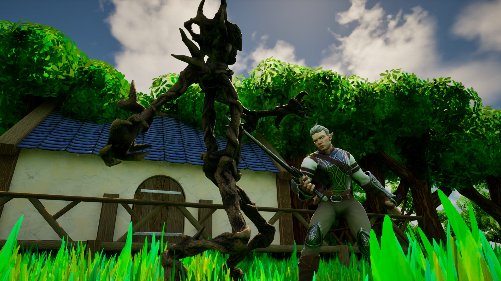
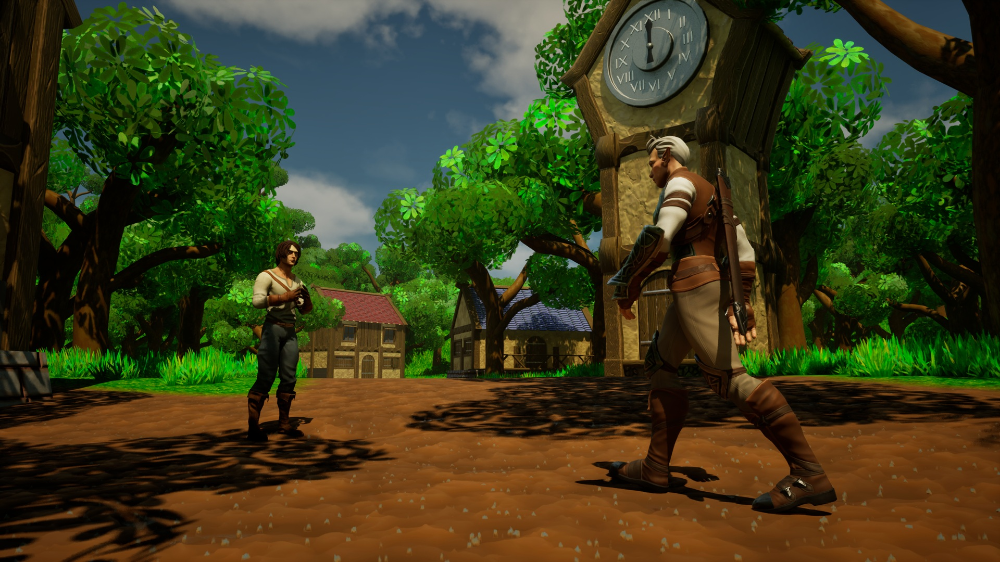

Fate's Loop
-Coming to Steam when its ready-
Fate's Loop is a stylised medieval fantasy adventure where you must solve puzzles, fight monsters, build relationships, and more, in order to save the village of Farbell from a time loop curse.

Be The Hero
You play as Thalor, a retired elven hero who must save his village from a time loop curse.

Your Actions Matter
Decisions matter and they will change how the characters treat you and how your story progresses.

Plan For Time
With every day cursed to repeat exactly the same, you must plan wisely what you enchant to save and what is lost to time.

The Adventure Awaits
Explore the fantasy village of Farbell to break the curse and maybe find a few secrets along the way.